|
|
J2SE 5.0
|
Eclipse 3.1 includes full suppot for the
new features of J2SE 5.0 (aka "Tiger"). One of the most
important consequences of this support is that you may not notice it
at all -- everything that you expect to work with J2SE 1.4, including
editing, compiling, debugging, quick fixes, refactoriungs, source
actions, searching, etc will work seamlessly with J2SE 5.0's new
types and syntax. In order to develop code compliant with J2SE 5.0,
you will need a 5.0 Java Runtime Environment (JRE). If you start Eclipse
for the first time using a 5.0 JRE, then it will use it by default.
Otherwise, you will need to use the Installed JREs dialog to register
one with Eclipse. You can reach this dialog either via
Prefereneces > Java > Installed JREs or by following the
Configure default... link on the New Java Project wizard.
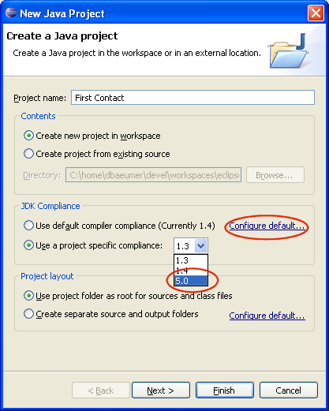
|
|
|
Enumerations and Annotations
|
Enumerations and Annotations can be
created with the new Enum or Annotation wizard:
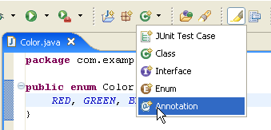
All refactorings have been updated to handle enumerations,
enumeration constants, annotations and annotations members.
|
|
|
Annotations
|
The Java compiler now supports
annotations (aka metadata as defined by JSR-175). In
particular, you can use predefined annotations such as Override or
Target.

Tools such as Java search and type hierarchies have been adapted to
support annotations. Support for package annotations is still to
come, as are improvements to various refactorings and source actions
to fully handle annotations. |
|
|
Autoboxing
|
The Java compiler now supports
autoboxing (specified in JSR-201). In the
following example, the parameter i of type Integer is unboxed into an
int and the local variable j of type int is boxed into an
Integer.

A word of caution: the compiler has to generate pretty much the
same bytecodes you'd get if you wrote int j = i.intValue() + 1;
return new Integer(j); It would be a mistake to think this new
convenience feature comes without a hidden cost.
|
|
|
New Type wizards support generics
|
The New Type wizards now support J2SE5
generic types in various fields:
- The Name field can include type parameter declarations.
- The Superclass and the implemented Interfaces can
include generic type arguments.
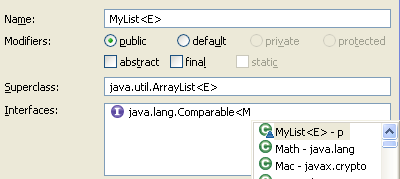
|
|
|
Support for J2SE 5.0 in Java editor
|
The Java editor now properly highlights
the new J2SE 5.0 language features. Go to the Java > Editor
> Syntax Coloring preference page to change the colors or to
enable semantic coloring of type variables, annotation elements and
auto(un-)boxed expressions:
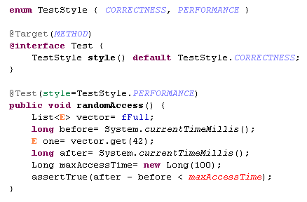
|
|
|
Completion on annotation attribute
|
Code completion on an annotation
attribute now proposes attribute names.
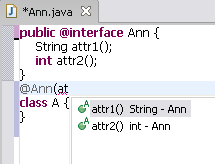
|
|
|
Completion on enum constant
|
Code completion on an expression inside
a switch proposes enum constants if the expression is an enum.
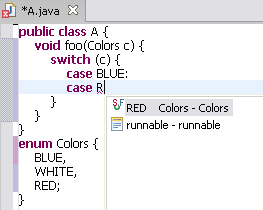
|
|
|
Completion inside annotations
|
Code completion inside a J2SE 5.0 single
member annotation or annotation attribute value is now supported.
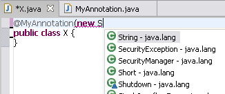
|
|
|
Code assist uses static imports
|
Code assist in the Java editor is now
able to process static imports when inferring context-sensitive
completions.
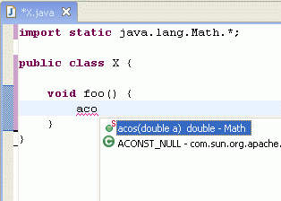
|
|
|
Code select on enum constant
|
Code select now returns an element if
the selection is an enum constant inside a case label.
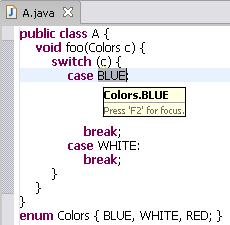
|
|
|
Parameter guessing for type parameters
|
Code Assist now inserts the correct type
parameters when completing a type in the Java editor. Type parameters
that cannot be disambiguated will be selected, and the Tab key
will move from one parameter to the next.
In this example String is inserted as the first type
parameter, while Number is proposed for the second:

To try out this feature, you need to enable Fill argument names
on the Java > Editor > Code Assist preference page.
|
|
|
New for loop template
|
The new foreach
template inserts a new 'for' loop into the code, proposing local Iterable
instances you may want to iterate over:
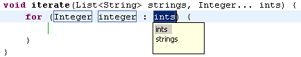
|
|
|
Autoboxing parameter proposals
|
Proposed parameters include
auto(un-)boxing proposals:
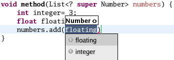
Note: Java > Editor > Code Assist > Advanced >
Guess filled argument names preference has to be enabled.
|
|
|
Operating on generic type parameters
|
Code assist (Ctrl+Space) and code select
(F3) now work with generic type parameters:

|
|
|
Convert to enhanced for loop
|
A new Quick Assist (Ctrl+1)
offers to convert old-style for loops over arrays and collections to
J2SE 5.0 enhanced for loops:

The Quick Fix simplifies the loop to:

|
|
|
New quick fixes for J2SE 5.0
|
For unresolved Java types, you now also
get proposals to create enums, annotations, and new type parameters:

Support for the Javadoc tags for type parameters has been added. In
J2SE, you document type parameters using the existing @param tag but
with the name enclosed in angle brackets.
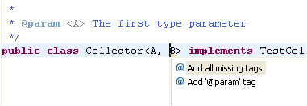
A new quick fix helps you changing the compliance settings when you
try to enter 5.0 constructs in a 1.4 project. Note that a 1.5 JRE is
required which has to be added in the 'Installed JRE's' preference
page.

|
|
|
Rename refactoring
|
The Rename refactoring has been extended
to handle renaming of type parameters of J2SE 5.0. Additionally,
occurrences of types as actual type parameters are now updated as
well.
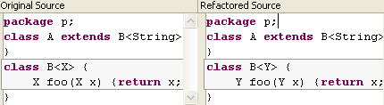
|
|
|
New refactoring: Augment Raw Container Clients
|
With J2SE 5.0, your code can use
generics to enhance readability and static type safety. Refactor
> Augment Raw Container Clients is a new refactoring that
helps clients of the Java Collections Framework to migrate their
code.

The refactoring infers type parameters for collection type
references, and will removes any unnecessary casts. It works on
single compilation units as well as on whole packages and Java
projects.
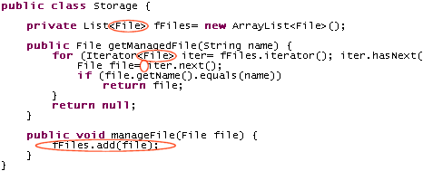
|
|
|
Infer Type Generic Arguments refactoring
|
The Infer Type Generic Arguments refactoring now offers two
configuration options:

When the first option is enabled, the refactoring assumes that
implementations of the clone() method return an object
of the same type as the receiver object. In the following example,
the return type of method cloneListeners() can then be
inferred to be Vector<TestListener>, which is
better than just Vector<?> or Vector.
public class TestResult extends Object {
protected Vector fListeners;
public void addListener(TestListener listener) {
fListeners.addElement(listener);
}
private Vector cloneListeners() {
return (Vector)fListeners.clone();
}
}
The second option controls the behavior when no type arguments
could be inferred. In the previous example, if the refactoring is not
allowed to handle the clone() method specially, then it
will just infer Vector<?> as the return type of
method cloneListeners(). If you don't like unbounded
wildcard types, you can opt to leave the type raw.
|
|
|
Static import groups
|
To organize your static imports, create groups for
the static imports and place them where you prefer. You can define an
'others' group to collect up all imports not matched by any other
group:
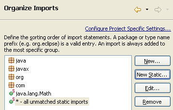
The 'others' group feature is also available for non-static
imports.
|
|
|
Varargs argument
needing a cast
|
The Java compiler can optionally flag
suspicious varargs method invocations. A null last argument is not
wrapped as a 1-element array as one might expect; adding an explicit
cast makes the intention of the code clear.
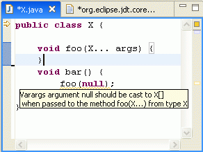
Currently, the preference setting can be found at Java >
Compiler > 5.0 > Inexact type match for vararg arguments.
|
|
|
Compiler diagnosis for 'enum' identifier
|
The Java compiler can now find and flag
where 'enum' is used as an identifier. While 'enum' is a legal
identifier up to source level 1.4, but a reserved keyword in 1.5
source. Enabling this warning allows to anticipate source migration
issues. See preference under Java > Compiler > Compliance
and Classfiles > Disallow identifier called 'enum'.
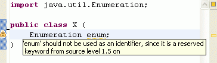
|
|
|
Boxing/unboxing diagnosis
|
The J2SE 5.0 autoboxing capability is
powerful but it can lead to unexpected behavior especially when
passing arguments. The compiler introduces an optional diagnosis that
indicates when autoboxing or autounboxing is performed. In the
following example, one might think that foo(Integer)
would be called, but since autounboxing is performed, foo(int)
is called.
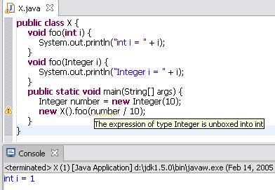
|
|
|
Usage of annotation type as super interface
diagnosis
|
In J2SE 5, the Java language allows a
class to implement an annotation type. However this should be
discouraged. The Java compiler optionally flags such usage.

|
|
|
Type parameter declaration hiding another type
diagnosis
|
The Java compiler can optionally flag a
type parameter declaration hiding another type.
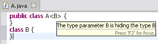
|
|
|
Missing @Override annotation diagnosis
|
The Java compiler can optionally flag a
method overriding a superclass method, but missing proper @Override
annotation.

|
|
|
Incomplete enum switch statement diagnosis
|
The Java compiler can optionally flag
incomplete enum switch statements.
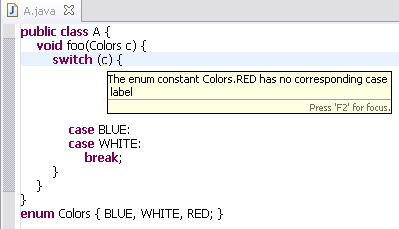
|
|
|
Missing @Deprecated annotation diagnosis
|
The Java compiler now recognizes the
@Deprecated annotations, and treats them equivalent to doc comment
/** @deprecated */. It can optionally flag deprecated constructs
missing a proper @Deprecated annotation (to encourage using
annotations instead of doc comment tag).
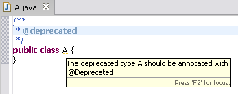
|
|
|
Support for package-info.java
|
Support has been added for the special
source file package-info.java, that allows annotating and documenting
packages. All JDT tools (code assist, code select, search, outline,
type hierarchies, etc.) can be used in this special compilation unit.
Doc comments inside the package-info.java are now processed, and
the syntax and references in standard comment tags are verified.
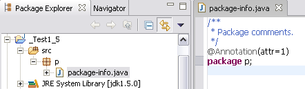
|
|
|
Support for @SuppressWarnings annotation
|
The J2SE 5.0 @SuppressWarnings
annotation is now supported. Examples of recognized warning names
are: "all", "deprecation", "serial", "unchecked", "finally". In the
example below, the first field is tagged with the
@SuppressWarnings("deprecation") annotation and no deprecation
warning is reported. The second field is not tagged and a deprecation
warning is reported.
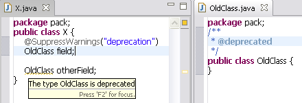
Note that a compiler option controls whether @SuppressWarnings
annotations are active or not.

By default, unhandled warning tokens are signaled by a warning.
This warning can also be suppressed using the
@SuppressWarnings("warningToken") annotation.
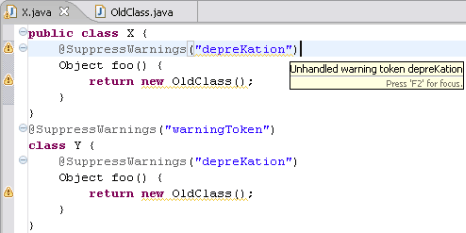
|
|
|
Support for capture conversion
|
In J2SE 5.0 compliance mode, the
compiler supports capture conversion as defined in the JLS 5.1.10
(3rd edition). This restricts the possibility of assignment when
wildcards are involved.
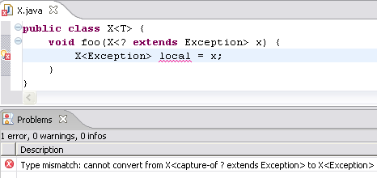
|
|
|
Code formatter for J2SE 5.0 constructs
|
The code formatter now supports all the
new J2SE 5.0 language constructs. Control over how the formatter
handles them are found on the Java > Code Style > Code
Formatter preference page:

|
|
|
Debugging 1.5 source code
|
You can run and debug 1.5 source code
with a 1.5 JRE. Breakpoints are supported in the enhanced for loop.
Java debug evaluations now support J2SE 5.0 constructs such as
generics and enhanced for loops. |
|
|
Class file naming change for local inner types
|
In 5.0 compliance mode, the Java
compiler now generates class files that follow the naming convention
specified in JLS 13.1 (3rd edition) for local inner types. As a
consequence, instead of generating a file named X$1$A.class,
it will simply be X$1A.class.

|
|

")